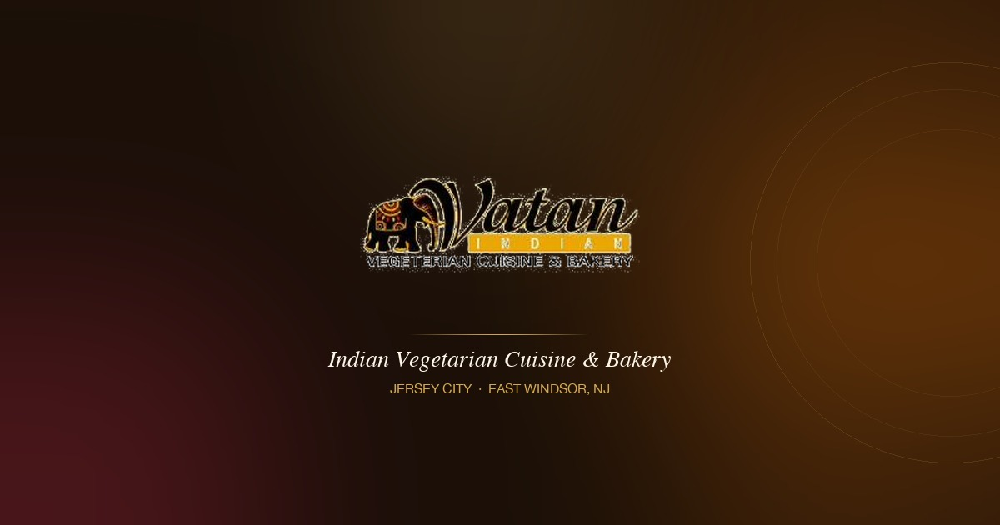
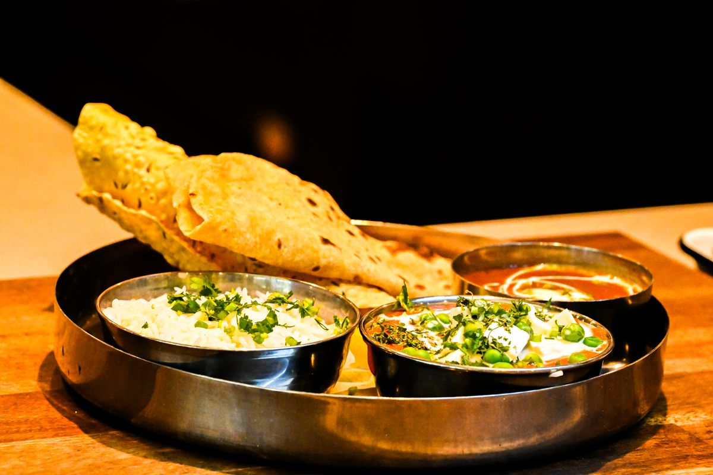
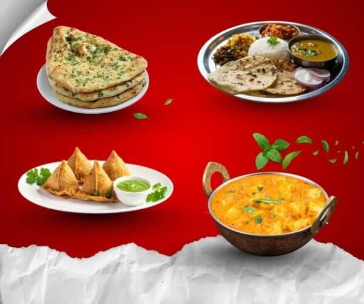
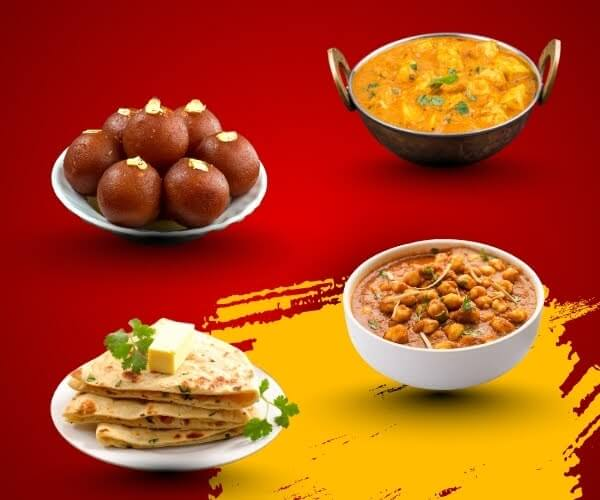
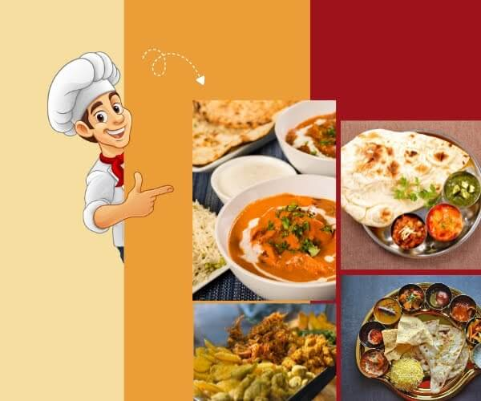
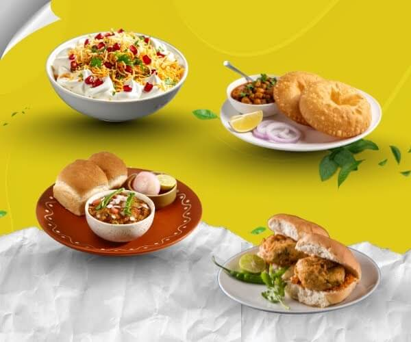
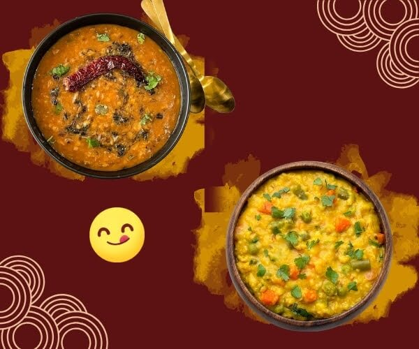
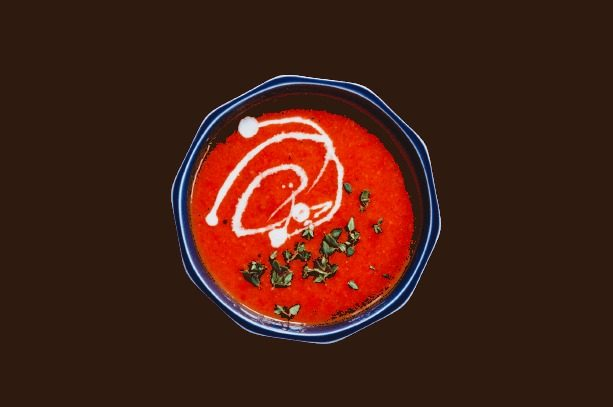
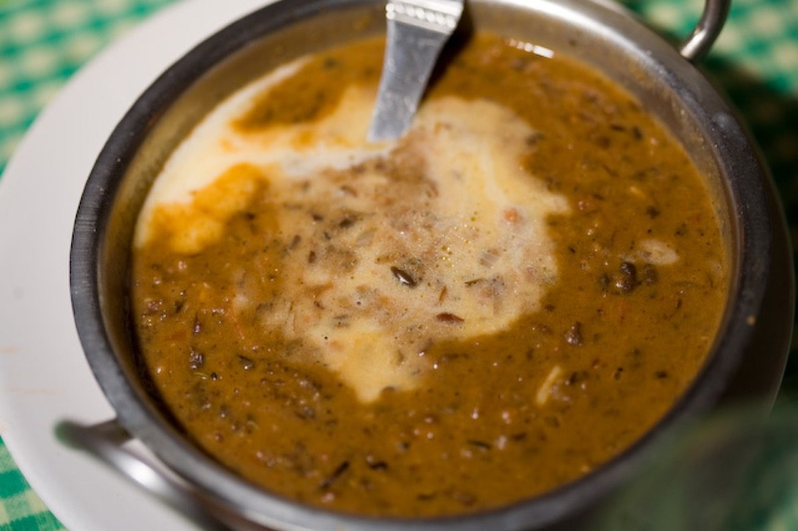
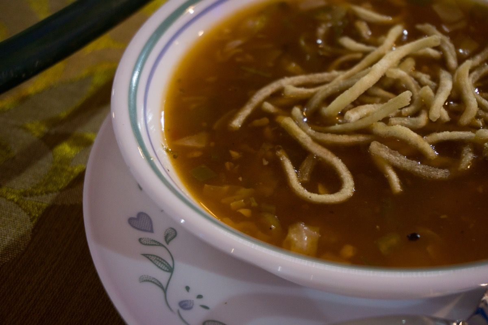

Local GuideWhere to Eat After Visiting BAPS Swaminarayan Akshardham in Robbinsville
Vatan is just 10–15 minutes from BAPS Akshardham — the closest 100% pure vegetarian Indian restaurant for temple visitors. Jain-friendly, group dining, and catering available.
Read MoreBest Vegetarian Indian Restaurant Near Princeton, NJ
Vatan in East Windsor is just 15 minutes from Princeton — the only 100% pure vegetarian Indian restaurant serving the Princeton community with Gujarati, Kathiyawadi, and South Indian cuisine.
Read More
Indian CuisineWhat Is a Gujarati Thali? A Complete Guide
The Gujarati Thali is one of India's greatest vegetarian traditions — a complete meal of dal, kadhi, sabzis, roti, rice, farsan, and meetha on a single platter. Here's everything you need to know.
Read More Dining & Ambiance
Dining & Ambiance
Why Indian Cuisine is the Ultimate Romantic Date Night
Planning a special evening? There's something uniquely captivating about Indian cuisine for a romantic date night. The vibrant spices, aromatic dishes, and warm ambiance create an unforgettable experience for two.
Read MoreDiscover the Best Indian Thali in East Windsor NJ at Vatan
Discover the art of the Indian Thali — a complete culinary experience featuring curries, dals, breads, rice, and sweets on a single platter. Vatan is East Windsor's premier destination for this celebrated tradition.
Read More About Vatan
About Vatan
Why Vatan is the Best Choice for Vegetarian Food in East Windsor
At Vatan, we are proud to be a beacon for authentic, purely vegetarian Indian food in East Windsor. Discover what sets us apart — from our signature thali to our diverse menu celebrating India's vegetarian traditions.
Read More Indian Cuisine
Indian Cuisine
Discovering the Heart of Indian Vegetarian Cuisine in East Windsor, NJ
For enthusiasts of vegetarian food in East Windsor, Vatan stands as a beacon of culinary excellence — a pure vegetarian haven that celebrates the diverse and vibrant tapestry of Indian cuisine.
Read More
SeasonalBest Indian Lunch, Dinner & Snacks in East Windsor This Winter
Winter in East Windsor brings chilly winds and cozy evenings. Indian cuisine stands out because it offers comfort, balance, and deep flavors that warm you from the inside out — from hearty thalis to crispy winter snacks.
Read More
Family DiningBest Family-Friendly Indian Dishes to Try This December
December is a special month for families. Indian cuisine, with its rich aromas and vibrant flavours, offers a wonderful way to make family meals extra special — from comforting thalis to beloved sweets like gulab jamun.
Read More
CateringHow to Choose the Perfect Indian Catering Menu for Holiday Parties
Holiday parties are special occasions where food plays a starring role. When it comes to adding flavour, colour, and variety, an Indian catering menu is a fantastic choice. Here is your complete planning guide.
Read More
Street Food10 Most Popular Indian Street Food Items Loved by Vatan Customers
Indian Street Food is known for bold flavors, bright colors, and unforgettable aromas. Discover the 10 most popular street food items at Vatan — from Pav Bhaji and Pani Puri to Samosa Chaat and Dhokla.
Read More
Comfort FoodWhy November is the Best Time for Dal and Khichdi
As the crisp breeze of November sets in, our taste buds naturally crave comfort food. Dal and Khichdi top the list — their warmth, simplicity, and nutritional value make them perfect for chilly November days.
Read MoreWhy Indian Food Is Perfect for Winter: Flavor, Warmth & Nutrition
There's something magical about winter and Indian food. As soon as the cold settles in, we reach for comforting meals that warm our hands, soothe our spirits, and fill us with satisfaction. This is where Indian food shines.
Read More Indian Sweets
Indian Sweets
Gajar Halva – 6 Mistakes to Avoid When Making Perfect
Gajar Halva, or Carrot Halwa, is a beloved Indian dessert — but small missteps can ruin it. Learn the 6 most common errors when making Carrot Halwa and how to avoid them for perfect results every time.
Read More
RecipesCreamy Tomato Soup Recipe
A tried-and-true 30-minute creamy tomato basil soup finished with parmesan and heavy cream. Rich, comforting, and easy to make — pairs perfectly with grilled cheese or crusty bread.
Read More
Comfort FoodDal Makhani: The Ultimate Winter Comfort Dish
Rich, creamy, and deeply satisfying — Dal Makhani is winter comfort food at its finest. Discover its Punjabi origins, health benefits, cooking techniques, and the best dishes to pair it with.
Read More
Comfort FoodManchow Soup & Tomato Soup: A Comfort Food Classic
Two beloved comfort soups compared — bold, spiced Indo-Chinese Manchow Soup versus the gentle, creamy Tomato Soup. Discover what makes each one special and when to reach for each.
Read More
Indian Cuisine
7 Reasons to Love Paneer Tikka
Smoky, protein-rich, and endlessly versatile — Paneer Tikka is a vegetarian classic that deserves a place on every table. Here are seven compelling reasons why this tandoor favorite wins hearts worldwide.
Read More